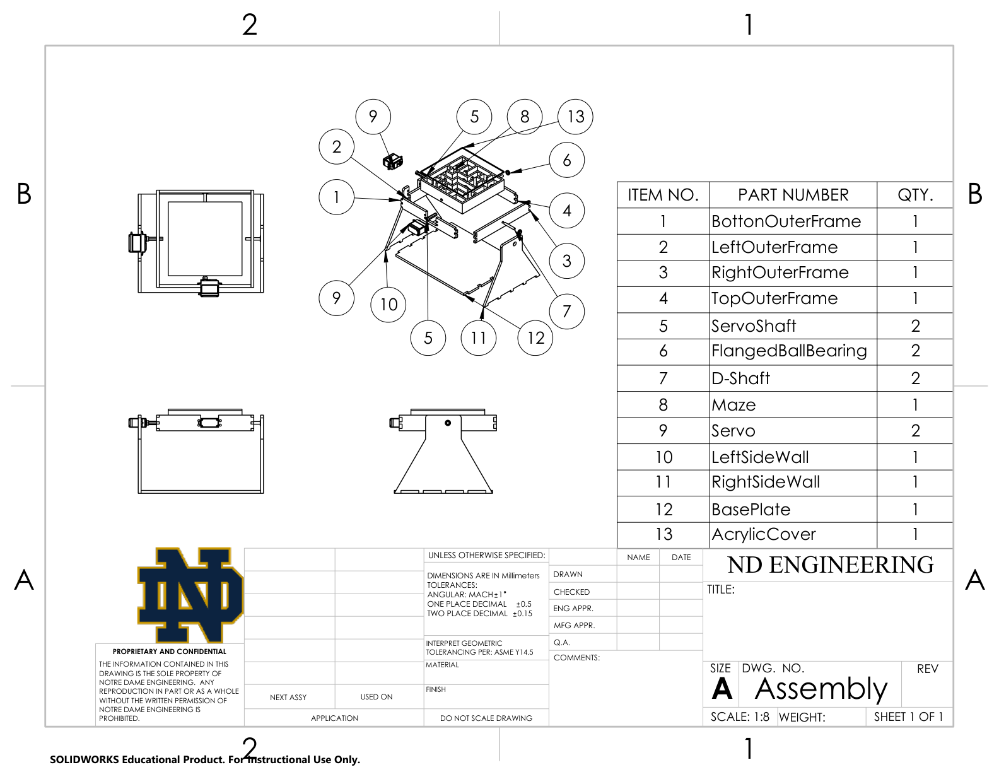
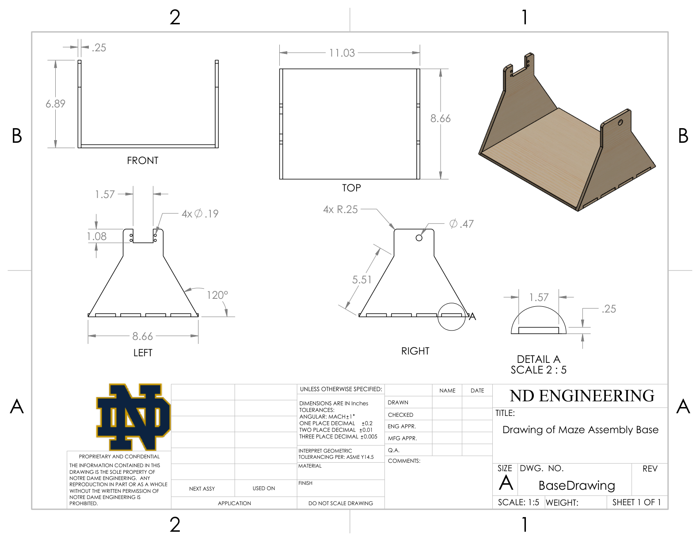
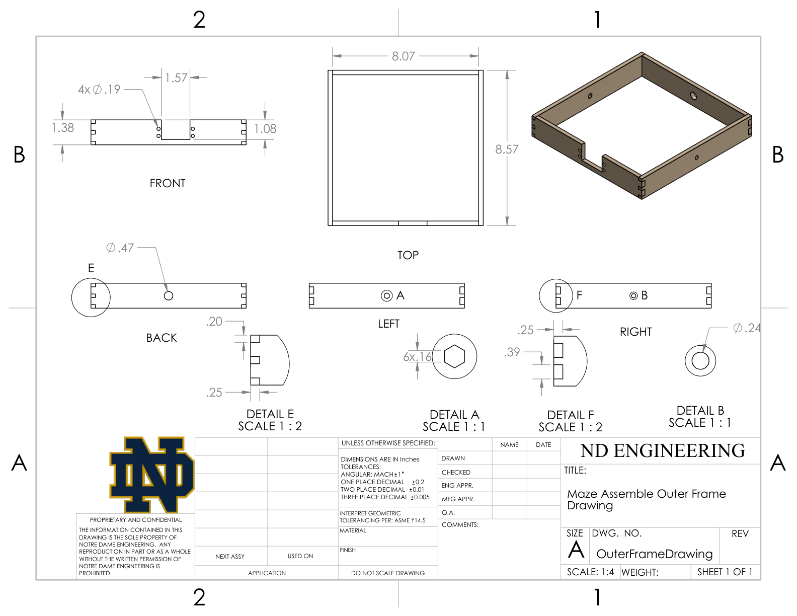

Servo-Controlled Marble Maze

Designed the SolidWorks gimbal assembly and manufactured a functioning two-axis, servo-controlled marble maze, using motion studies and physical testing to refine alignment and clearances.
Project Overview
I led the design and fabrication of a functioning two-axis servo-controlled marble maze, taking ownership from concept development through assembly and prototype testing. The system allows a player to tilt the maze in two directions to guide a marble through its paths and obstacles.
Our team collaboratively selected the maze design. I personally created all SolidWorks CAD models for the maze and frames, laser-cut the frames, 3D-printed the maze, and assembled the complete mechanism. I also worked with my teammates to develop the engineering drawings.
Selecting the Mechanism
During concept development, we compared actuation approaches against rotational range, friction, mechanical complexity, and servo torque constraints. An initial ball-and-socket concept presented friction and actuation challenges, leading us to select a nested gimbal configuration.
The selected mechanism supports rotation about two perpendicular axes. One servo tilts the outer frame relative to the base, while the second tilts the maze within that frame. This arrangement provides the two directions of motion needed to control the marble.
CAD Development and Motion Studies
I translated the selected concept into SolidWorks models for the maze and frames, developing the geometry around the servo and shaft interfaces. The assembly integrated custom components with commercial servos, shafts, hubs, and bearings.
I developed motion studies to examine the mechanism’s two-axis movement and understand how the maze and frames interacted throughout rotation. These studies supported the transition from the digital assembly to a physical prototype.
Fabrication and Assembly
I laser-cut the wooden frames and 3D-printed the maze, then assembled the complete system with its servo and shaft hardware. The design combined a rigid support structure with a printed maze and transparent acrylic cover to contain the marble during operation.
Building the prototype required translating the CAD interfaces into physical fits and aligning the rotating components. This stage connected the design work with practical considerations such as manufacturing tolerances, clearances, and assembly access.



Engineering drawings documenting the base and outer-frame geometry, dimensions, and assembly features.
Testing and Design Refinement
Prototype testing revealed interference and servo-alignment constraints that limited the usable tilt range. I worked with the team to correct the mechanical interfaces and verify independent motion about both axes.
The completed design achieved independent ±20° tilt in each axis, supported by SolidWorks motion analysis and prototype testing. The physical build also highlighted the importance of machining and printing tolerances, shaft alignment, and accessible fasteners.
Project Outcome
We produced a functioning two-axis marble maze and refined its movement through prototype testing. My contribution covered the complete path from maze and frame CAD to fabrication and final assembly, alongside collaborative concept selection, drawing development, and testing.
The project strengthened my skills in mechanism design, SolidWorks modeling, fabrication, hardware integration, and using observed performance to guide design changes.